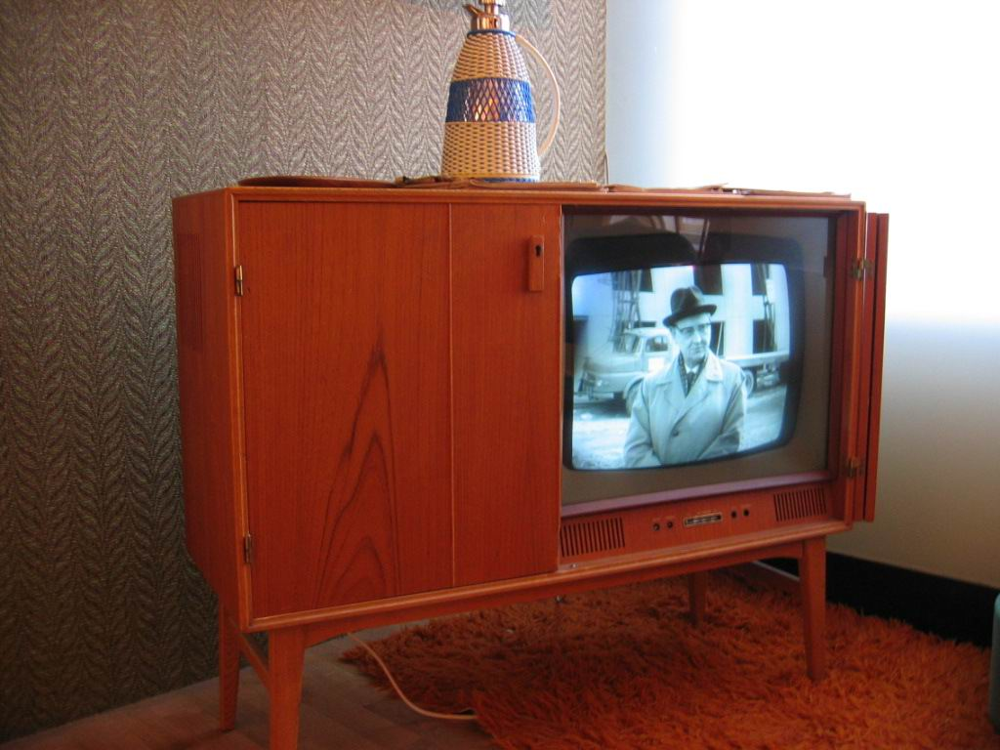
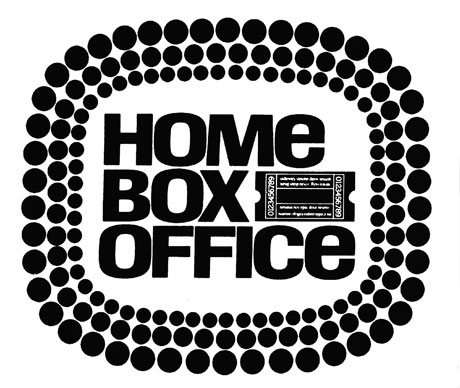
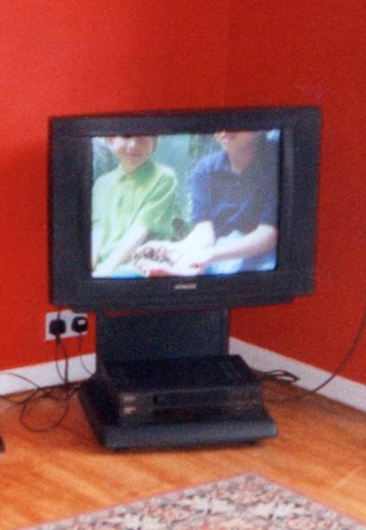
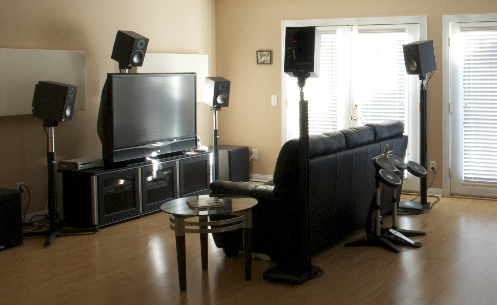

La televisión latinoamericana durante los años 2010
Televisión digital, alta definición, nuevas pantallas, streaming y cambios en los hábitos de consumo.
Leer artículoHistoria de la television, el cine y la cultura audiovisual en Latinoamerica
Televisión digital, alta definición, nuevas pantallas, streaming y cambios en los hábitos de consumo.
Leer artículo
Los primeros experimentos, las cadenas nacionales, el color, el cable y los satélites en Latinoamérica.
Leer artículo
HBO, los canales especializados y la revolución del cable hasta la llegada de HBO Ole.
Leer artículo
Televisión abierta, expansión del cable y circulación de señales internacionales.
Leer artículoLa llegada del canal, su programación y sus producciones originales.
Leer artículoSeries, identidad visual y consolidación del canal en la región.
Leer artículo
Expansión del cable, señales temáticas, transición digital y primeros contenidos audiovisuales en Internet.
Leer artículoHistoria de la señal, sus producciones, identidad visual y transición hacia el streaming.
Leer artículo